足裏と顔にできたウイルス性イボの体験記
数年前、足の裏にイボのようなものができ、その後は顔にもイボができました。 ここでは、病院で受けた説明や、自分が実際に試したこと、その後の変化をひとつの記事にまとめます。
足裏にできたイボ
最初は足裏に小さなイボができました。原因は分かりません。 気になって触ったり引っ掻いたりしているうちに徐々に大きくなり、 そのまま放置していると、歩いたときに痛みを感じるほどになりました。
中心はクレーターのようにくぼみ、白っぽいぶつぶつが見える状態でした。 周囲は盛り上がって硬くなっており、強く押したり体重をかけたりすると痛みがありました。
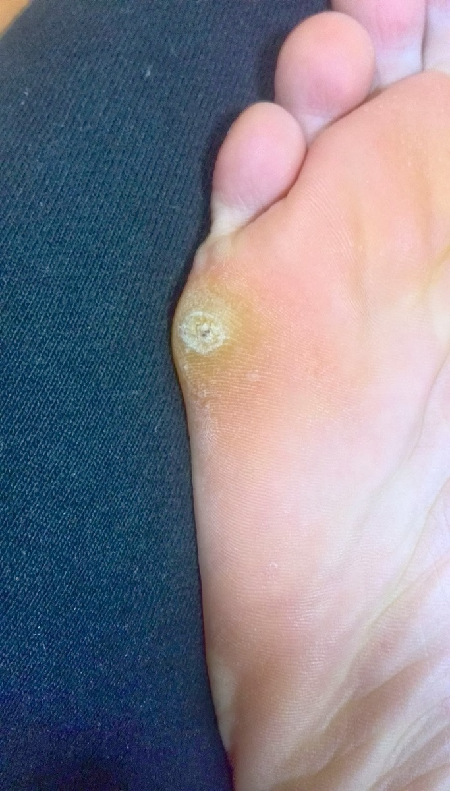
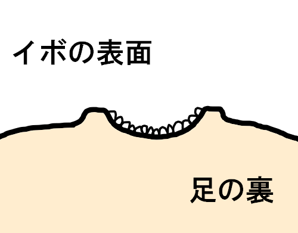
病院での診断と治療の説明
2つの病院を受診し、どちらでも「ウイルス性イボ」と診断されました。 尋常性疣贅（じんじょうせいゆうぜい）と呼ばれ、ヒトパピローマウイルス（HPV）の感染によって起こるものだと説明を受けました。
医師からは、主に次のような治療について説明されました。
- 液体窒素による凍結療法
- ヨクイニンの内服
- 外用薬による治療
私の場合は外用薬やヨクイニンをしばらく試しましたが、すぐには変化を感じませんでした。 液体窒素については痛みが不安で、この時点では受けませんでした。
足裏のイボに試したことと経過
その後、市販の「明治きず軟膏」を患部に塗り、絆創膏で覆う方法を自分で試しました。 入浴後に患部を清潔にして軟膏を塗り、翌日の入浴時に絆創膏を外して洗い流す、という形で続けました。 同時にヨクイニンも飲んでいました。
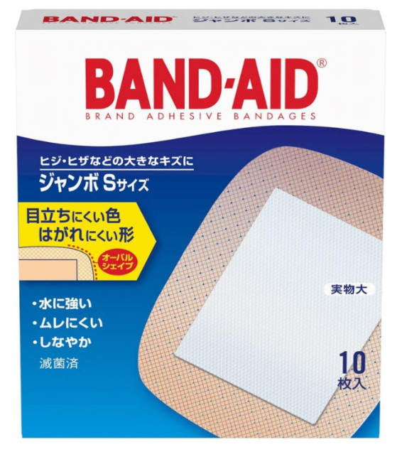
約2か月続けたころ、足裏のイボは目立たなくなり、最終的にはきれいな状態になりました。 数年間悩んでいたため、自分としてはかなり大きな変化でした。
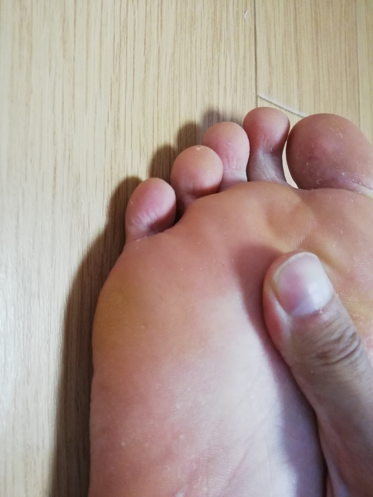
ただし、これだけで「きず軟膏がウイルス性イボを治した」と断定することはできません。 ウイルス性イボは自然に消えることもあり、同時に行っていたこともあるため、 私の場合にどの要素が効いたのかは分かりません。
自分で切ったり削ったりしない
足裏の経験で特に感じたのは、イボを爪切りやハサミ、ナイフなどで切ったり削ったりしない方がよいということです。 出血したり傷ができたりすると、炎症や二次感染を起こす可能性があります。 また、触った手を介して別の場所へ広がる可能性もあるため、必要以上に触らない方が安心です。
その後、顔にもイボができた
足裏が落ち着いてから約1年後、今度は鼻の周辺にイボのようなものができました。 最初は小さかったのですが、気になって触ったり、飛び出した部分を自分で切ったりしているうちに悪化しました。
足裏のものとは見た目が違い、細長い突起が外へ伸びるような形でした。 触ると痛みもありました。
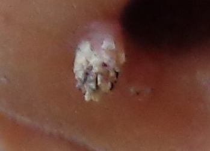
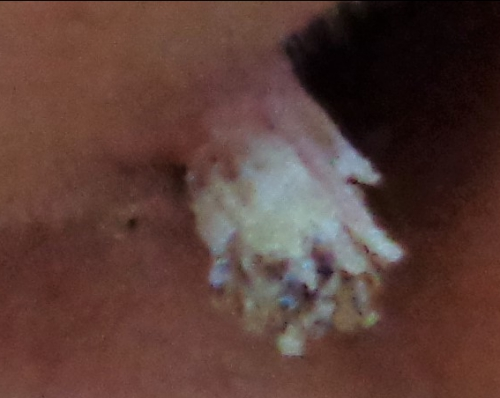
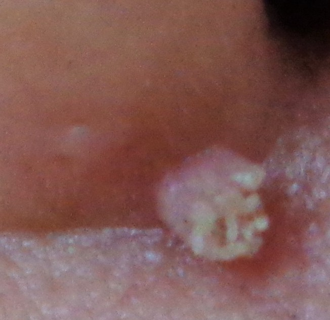
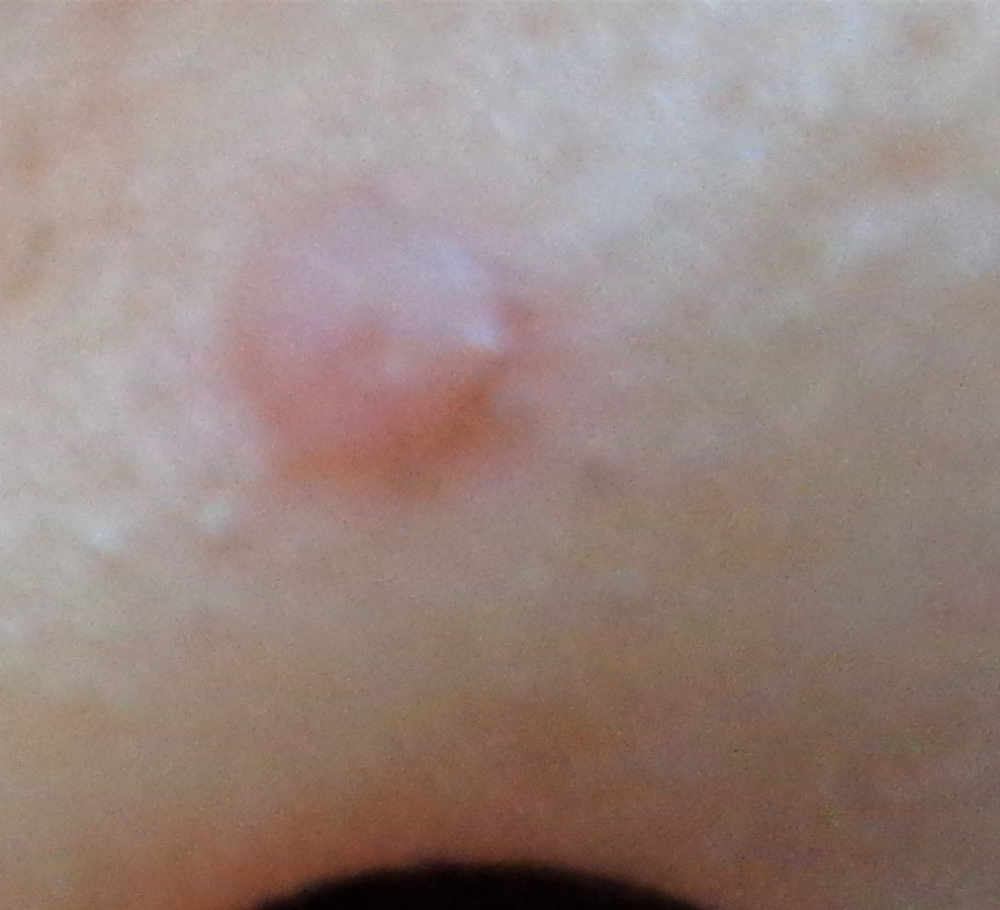
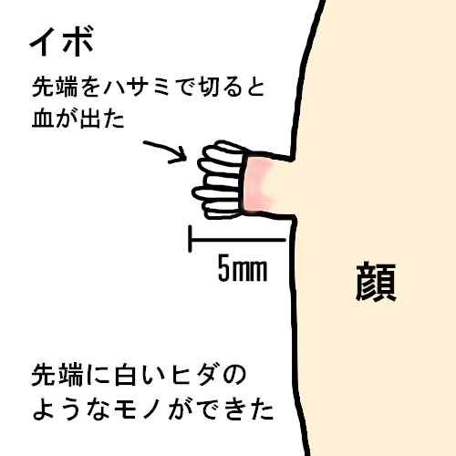
ネットで見た形は「糸状疣贅」に似ていましたが、最終的には病院で診察を受け、 ウイルス性イボだと言われました。
病院では、液体窒素による治療やヨクイニンについて説明を受けました。 顔という場所だったこともあり、私はこの時点では液体窒素による治療を選びませんでした。
顔のイボの経過
足裏のときと同じように、きず軟膏を塗り、ヨクイニンも飲みながら様子を見ることにしました。 10日ほどすると、イボの先端が白っぽく乾燥したように見えるようになりました。
約20日後には先端の見た目がさらに変化し、ギザギザした部分が目立つようになりました。
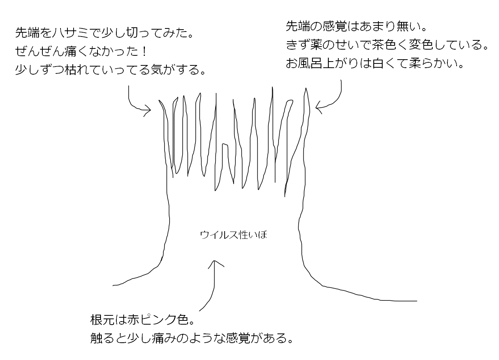
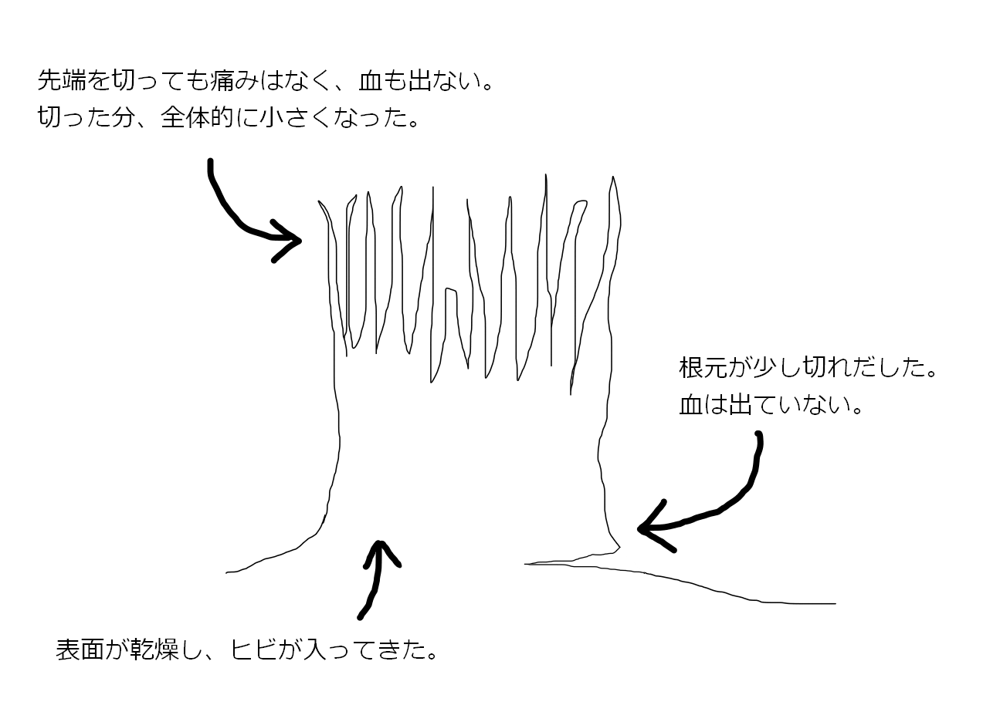
その後、表面がざらつき、乾燥した部分が自然に少しずつ剥がれるようになりました。 無理に切り取るのではなく、そのまま経過を見ました。
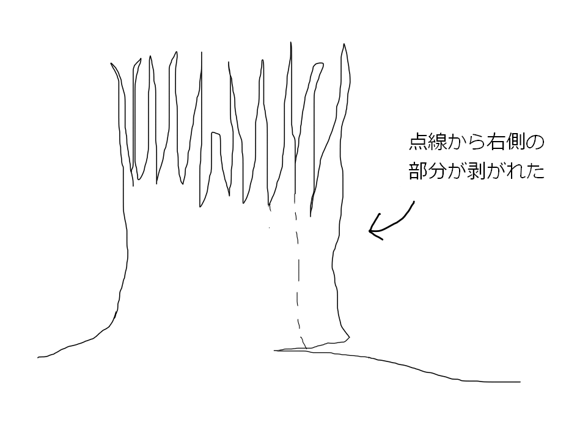
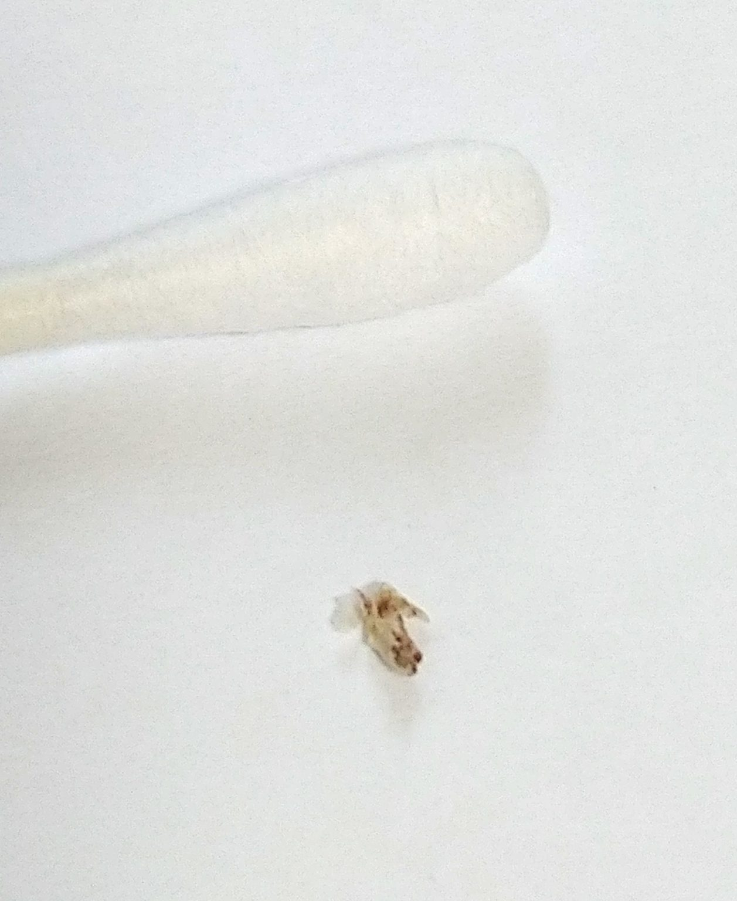
約3か月ほど経ったころには、顔のイボはほとんど分からない状態になりました。 自分としては、足裏に続いて今回も大きく改善したと感じました。
この時期には飲酒もやめていましたが、禁酒とイボの改善に直接の因果関係があったかどうかは分かりません。
振り返って
足裏と顔、2回のウイルス性イボを経験しました。 どちらも病院で診察を受けたうえで、その後の経過を自分なりに観察したものです。
私の場合は市販の軟膏やヨクイニンを使っている期間に改善しましたが、 それらが直接の治療効果を示したとは断定できません。 一般に治療方法には凍結療法など複数の選択肢があるため、 症状が続く、痛い、出血する、顔など目立つ場所にある場合は、 自己処置を続けるより医師に相談した方が安全です。
※この記事は、もともと別々だった「足裏のイボ」と「顔のイボ」の2記事を、時系列に沿って1ページに再構成したものです。